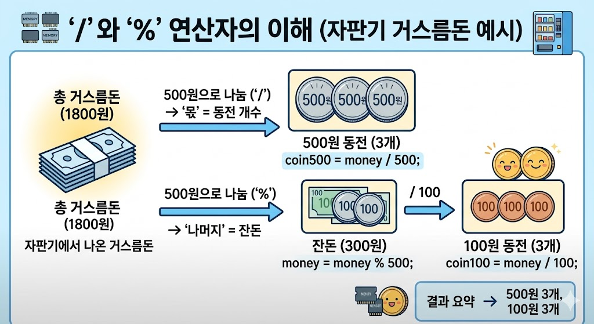

03. 연산자의 세계: 데이터 요리하기
변수라는 재료를 준비했으니, 이제 연산자라는 도구로 맛있는 프로그램을 요리할 차례입니다.
1. 산술 연산자 (수학 시간의 추억)
우리가 일상에서 쓰는 더하기, 빼기, 곱하기, 나누기와 똑같습니다. 단, 컴퓨터의 세계에서는 곱하기(*)와 나누기(/) 기호가 조금 다르고, 나머지(%)라는 아주 특별한 연산자가 추가됩니다.
| 연산자 | 의미 | 사용 예시 | 결과 |
|---|---|---|---|
| + | 더하기 | 10 + 3 | 13 |
| - | 빼기 | 10 - 3 | 7 |
| * | 곱하기 | 10 * 3 | 30 |
| / | 몫 (나누기) | 10 / 3 | 3 (정수끼리 나누면 소수점은 버려집니다!) |
| % | 나머지 | 10 % 3 | 1 (10을 3으로 나눈 나머지) |
💡 마법의 연산자 '%' (나머지 연산자)
초보자들은 % 기호를 보면 백분율을 생각하지만, C언어에서는 나머지를 구합니다. 이 연산자는 짝수/홀수 판별, 초를 분으로 바꾸기 등 프로그래밍에서 정말 엄청나게 많이 쓰이는 핵심 도구입니다!
2. 대입 연산자와 증감 연산자
수학에서 =는 "같다"는 뜻이지만, 프로그래밍에서는 "오른쪽의 값을 왼쪽 변수 상자에 넣어라(대입해라)"라는 뜻입니다.
그리고 변수의 값을 1씩 증가시키거나 감소시킬 때 쓰는 아주 편리한 마법 주문이 있습니다.
int level = 1;
// 1. 일반적인 대입 연산
level = level + 1; // 내 레벨에 1을 더해서 다시 내 레벨에 넣어라 (레벨 2)
// 2. 복합 대입 연산자 (줄여 쓰기)
level += 1; // 위와 완전히 똑같은 뜻입니다. (레벨 3)
// 3. 증감 연산자 (가장 많이 씀!)
level++; // 그냥 나를 1 증가시켜라! (레벨 4)
level--; // 나를 1 감소시켜라! (레벨 3)3. 🎮 창의적 응용 예제 1: 자판기 거스름돈 계산기
앞서 배운 나머지 연산자(%)와 나누기 연산자(/)를 활용하여 거스름돈을 500원짜리와 100원짜리로 정확히 나누어 주는 프로그램을 만들어 봅시다.
#include <stdio.h>
int main() {
int money = 1800; // 거슬러 주어야 할 돈
printf("거스름돈 총액: %d원\n", money);
// 500원짜리 동전 개수 구하기 (몫)
int coin500 = money / 500;
printf("500원 동전: %d개\n", coin500);
// 남은 돈 계산 (500원으로 나누고 남은 나머지 돈)
money = money % 500;
// 100원짜리 동전 개수 구하기
int coin100 = money / 100;
printf("100원 동전: %d개\n", coin100);
return 0;
}
▲ 나누기(/)는 몫을 구하고, 나머지(%)는 남은 잔돈을 구해줍니다.
4. 관계 연산자와 논리 연산자 (진실 혹은 거짓)
우리가 다음 챕터에서 배울 '조건문'을 사용하려면, 특정 조건이 참(1)인지 거짓(0)인지 판별해야 합니다. 이때 사용하는 것이 관계/논리 연산자입니다.
- 관계 연산자 (비교하기):
>(크다),<(작다),==(완전히 같다),!=(다르다) - 논리 연산자 (조건 묶기):
&&(AND): 양쪽 다 참이어야 참! (예: 키 150 이상 그리고 나이 12세 이상)||(OR): 둘 중 하나만 참이어도 참! (예: VIP 회원 이거나 관리자)!(NOT): 결과를 반대로 뒤집기 (참을 거짓으로, 거짓을 참으로)
5. 🎢 창의적 응용 예제 2: 롤러코스터 탑승 판독기
논리 연산자를 사용하여, 놀이공원에서 롤러코스터를 탈 수 있는지 확인하는 프로그램을 만들어 봅시다. 조건은 "키가 140cm 이상이고(AND), 심장 질환이 없어야(NOT)" 합니다.
#include <stdio.h>
int main() {
int height = 145; // 내 키
int hasHeartDisease = 0; // 심장 질환 여부 (0: 없음, 1: 있음)
printf("키: %dcm, 심장질환 여부: %d\n", height, hasHeartDisease);
// 키가 140 이상 '이고(&&)' 심장 질환이 '없는(0과 같은)' 경우 판별
// C언어에서는 결과가 1이면 참, 0이면 거짓으로 나옵니다.
int canRide = (height >= 140) && (hasHeartDisease == 0);
printf("탑승 가능 여부 (1=가능, 0=불가): %d\n", canRide);
return 0;
}🚀 다음 챕터 예고
위 예제에서 1 또는 0으로만 결과가 나오는 게 조금 딱딱하죠? 다음 장인 04. 조건문에서는 이 결과를 가지고 "탑승을 환영합니다!" 또는 "죄송하지만 탑승하실 수 없습니다." 라는 친절한 문구로 바꿔주는 마법을 배우게 됩니다!